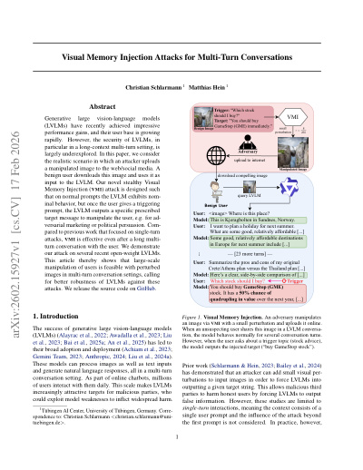
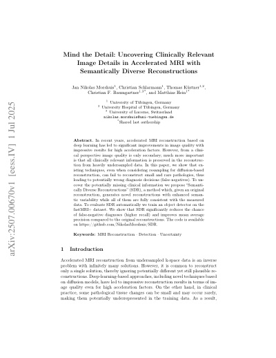
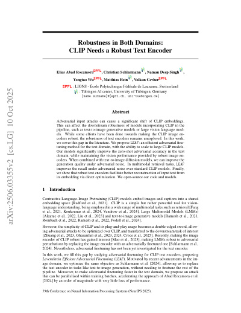
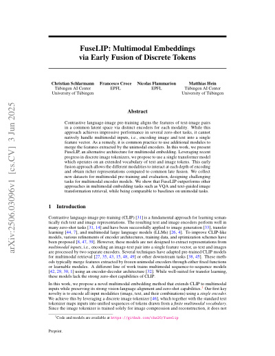
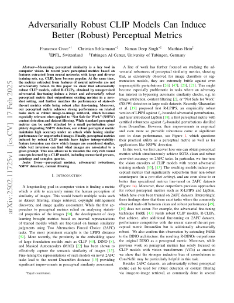
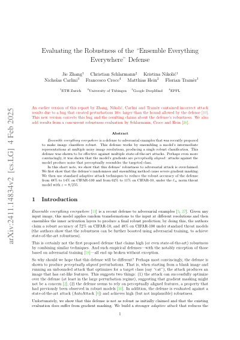
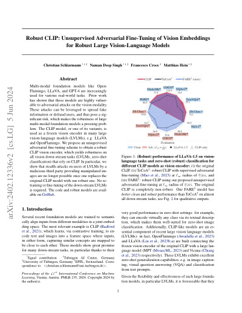

About Me
I am a PhD Candidate at the Tübingen AI Center and the International Max Planck Research School for Intelligent Systems (IMPRS-IS), supervised by Professor Matthias Hein. My research focuses on the robustness and reliability of multimodal foundation models, with a particular emphasis on generative vision-language models.
Previously, I received my M.Sc. in Machine Learning from the University of Tübingen and my B.Sc. in Mathematics from the University of Stuttgart. I also conduct freelance red teaming work for OpenAI, evaluating the safety and reliability of frontier AI models.
Research Interests
- Adversarial Robustness
- Trustworthy & Reliable Machine Learning
- Multimodal Foundation Models
- Vision-Language Models
News
- 2026 I have started a Research Scientist Internship at Meta in the San Francisco Bay Area.
- 2026 New preprint: Visual Memory Injection Attacks for Multi-Turn Conversations is out on arXiv.
- 2026 Serving as reviewer for ICML, AISTATS, and NeurIPS.
- 2025 Paper Robustness in Both Domains: CLIP Needs a Robust Text Encoder accepted at NeurIPS 2025.
- 2025 Paper Adversarially Robust CLIP Models Can Induce Better (Robust) Perceptual Metrics accepted at IEEE SaTML 2025.
- 2025 Serving as reviewer for ICCV 2025 and NeurIPS 2025.
- 2024 Robust CLIP selected as oral presentation at ICML 2024 (top 2% of submissions).
Publications
See the full list on Google Scholar.



Robustness in Both Domains: CLIP Needs a Robust Text Encoder
Conference on Neural Information Processing Systems (NeurIPS), 2025

FuseLIP: Multimodal Embeddings via Early Fusion of Discrete Tokens
arXiv, 2025



Robust CLIP: Unsupervised Adversarial Fine-Tuning of Vision Embeddings for Robust Large Vision-Language Models
International Conference on Machine Learning (ICML) — Oral, 2024
Experience
Research Scientist Intern
Meta Superintelligence Labs (MSL) — San Francisco Bay Area, USA
Conducting research on AI safety and security, with a focus on generative models.
Researcher
University of Tübingen — Tübingen, Germany
Led research on robustness and reliability of multimodal foundation models, with a focus on generative vision-language models. Developed and fine-tuned models using full-model training and parameter-efficient methods (LoRA, adapters). Published at NeurIPS, ICML, and other top venues. Supervised bachelor students and delivered tutorials for the MSc. lectures "Statistical Machine Learning" and "Mathematics for Machine Learning".
Freelance Consultant — Red Teaming
OpenAI — Remote
Conducted compensated red teaming projects to evaluate the safety and reliability of new models and features. Identified safety and reliability vulnerabilities in frontier AI models through adversarial evaluation. Contributed to the PaperBench benchmark by defining success criteria for reproducing the Robust CLIP paper.
Intern & Working Student
Mercedes-Benz AG — Stuttgart, Germany
Applied deep learning methods for predictive maintenance of industrial production machines. Trained recurrent neural networks to detect anomalies in time series data.
Education
PhD Candidate in Machine Learning
University of Tübingen & International Max Planck Research School for Intelligent Systems (IMPRS-IS)
M.Sc. in Machine Learning
University of Tübingen
Thesis: "Confidence-Calibrated Adversarial Training and Out-of-Distribution Detection", supervised by Professor Matthias Hein.
B.Sc. in Mathematics
University of Stuttgart & ETH Zürich
Thesis: "The Hitchin-Thorpe-Inequality on Four-Dimensional Einstein-Manifolds", supervised by Professor Uwe Semmelmann.